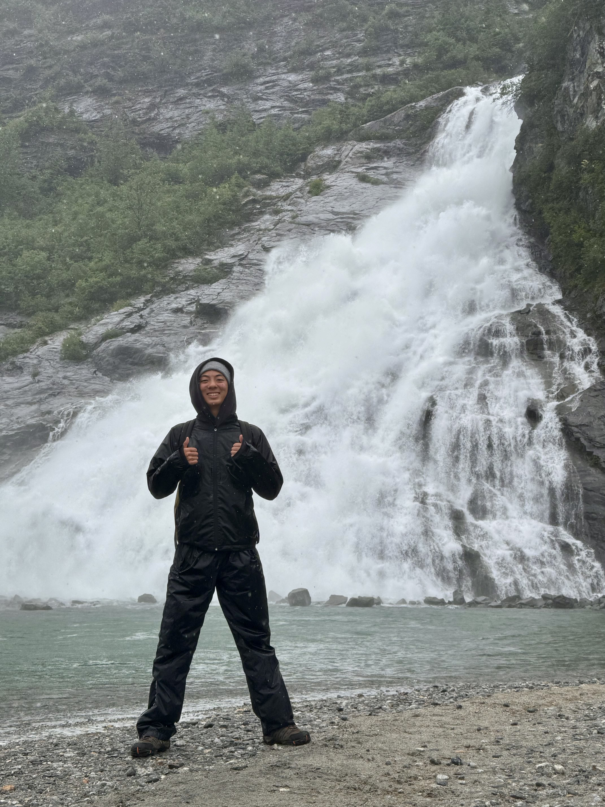

Who am I? What am I? What is my path?
My name is Matthew Liu and at my current stage of life, I have been and am currently constructing a strong foundation to increase my chances of finding a set career path. To start off, I have considered taking the business path, precisely banking or managing. From past experiences, I have matured enough to realize that my personality is fit as someone who is convincing. As an adolescent, some ways to gain exposure to the real world, I am attempting to charter the EHS Golf Club, along with finding a job this summer. Doing so can strengthen my overall mentality, such as ways to face rejection, facing rude people, and managing money.
Growing up, I have come of age to understand my personalities. Some of these personalities include team player, persuasive, energetic, natural leader, creative, and alert. In the most recent group project, I was assigned as a backend. Though I was not comfortable with my position, I managed to overcome this thought and still help out my team with anything they struggled with. Other activities that clearly portrayed my personality skills was creating my golf club. As president, leading the members and teaching them requires natural leadership skills, which strongly suits me. Furthermore, some achievements I have earned from my outside life was starting a lemonade stand with my friend. Although this might seem simple, starting a lemonade stand with my friend Artur was both fun and nerve-racking due to the fact that I need to shout to grab attention from people. Overall, I was able to face rejection and spend quality time with my friend, along with a jump of excitement whenever somebody stopped by our stand.
At my current stage of life, golf has been a significant meaning to me, along with spending more time with family and friends. Diving deeper into golf, I am a single handicap player, which is in the top 8%. The majority of my family plays golf, which is where all my golf skills are made up from. Recently, I went to Tuscon, Arizona to play golf with my family and cousin, which proved to be one of the best golf courses I have ever played. Moving on from golf, some hobbies I attend to are video games, baking/cooking, and basketball. Although I have slowed down in video games, due to the increase of school work, I was once able to achieve top 4000 in the nation while playing a game called Valorant. This is a small piece of who I am and my current life. If you want to learn more about me, contact me at 925-216-0916 or email me at liu5421@mydusd.org.
Overall, my fifteen years of life has served as a mere reminder that there is an abundance amount to learn in such a short span of time. With more years to come, there are still many lessons to learn and things to improve on, including some of my favorite hobbies. Thank you for your time.